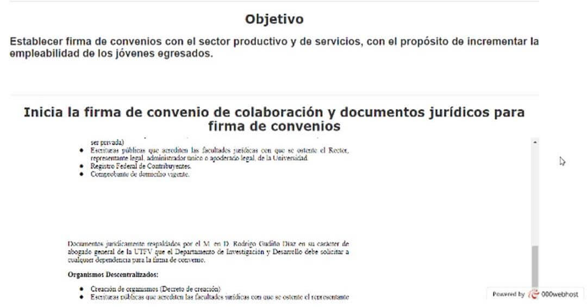
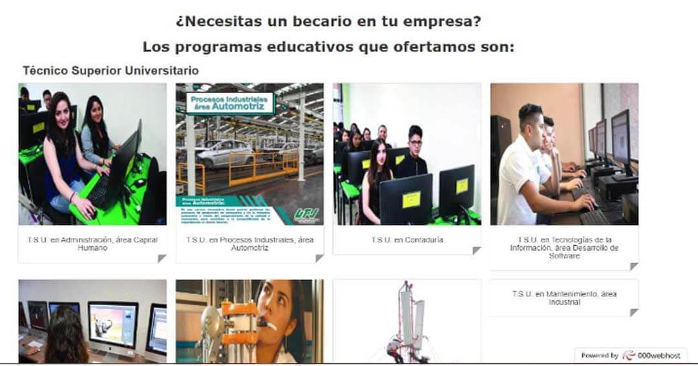
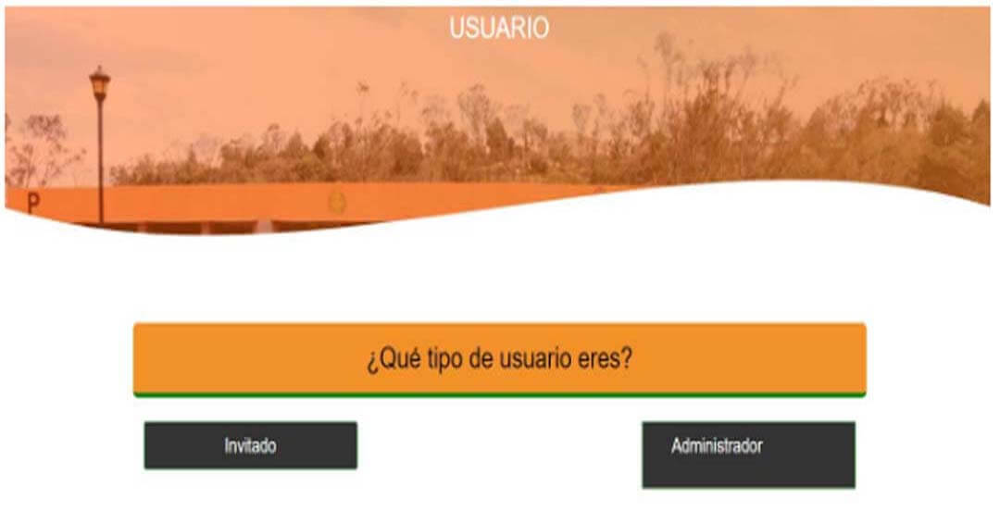
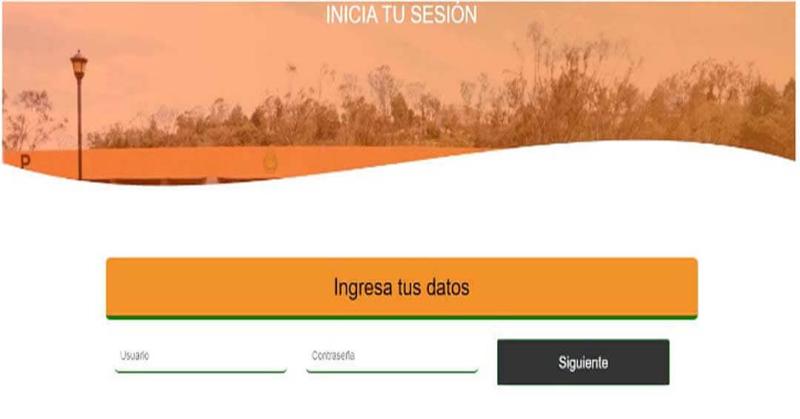
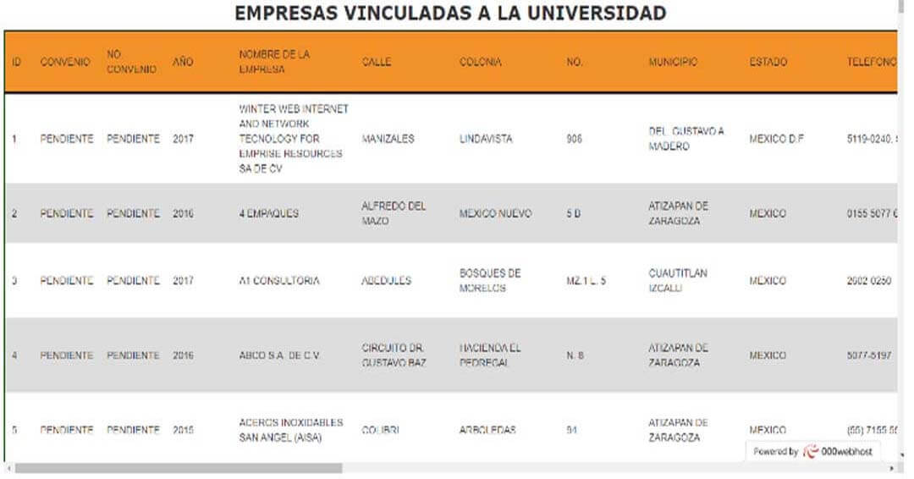
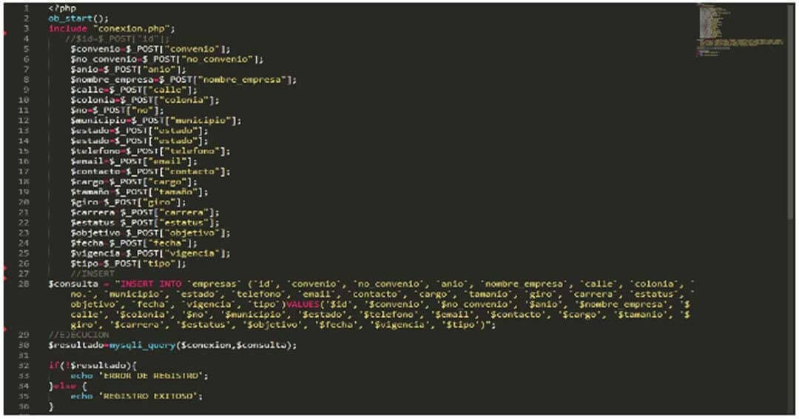
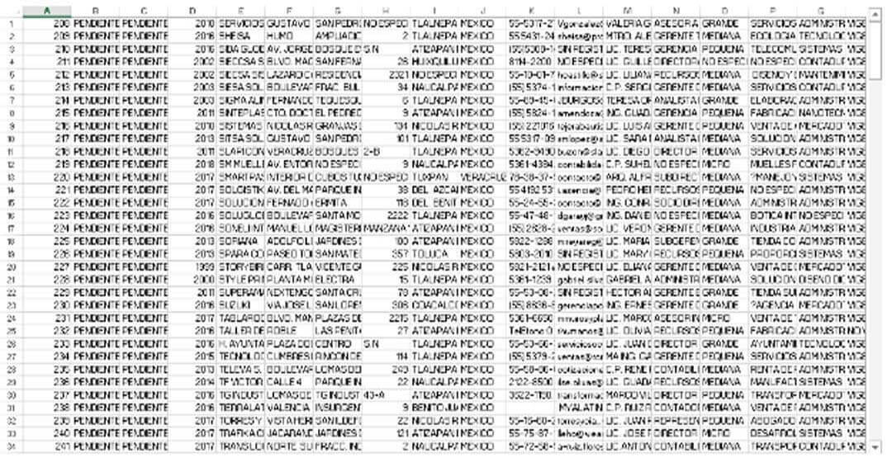
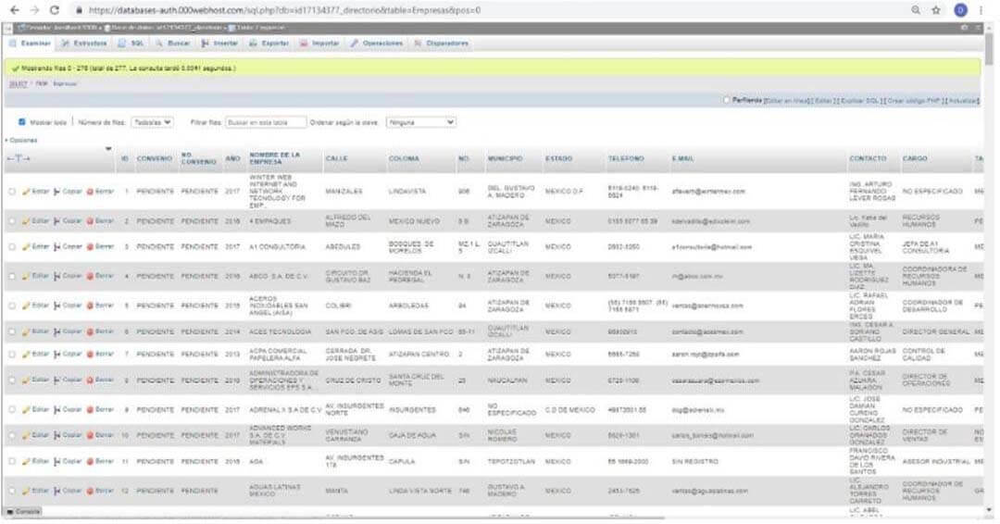
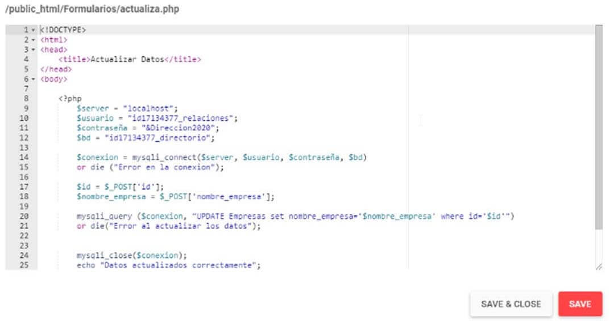

VINCULACIÓN
Sector Empresarial
En este trabajo, participé en la finalización de un proyecto que consistió en retomar un sitio web previamente desarrollado para la Dirección de Relaciones Industriales de la Universidad Tecnológica Fidel Velázquez.
El objetivo principal fue implementar una base de datos que contuviera información sobre las empresas vinculadas a la universidad. Una vez finalizado, este directorio de empresas se mostraría a las mismas para que pudieran conocer las funciones desarrolladas dentro de esta área.
Mi contribución en este proyecto fue la siguiente:
-Realizar una investigación exhaustiva para identificar las empresas que mantenían convenios con la universidad.
-Actualizar los datos de las empresas mediante comunicación directa con ellas.
-Ingresar y actualizar la información en la base de datos existente.
-Exportar la base de datos en un formato relacional (SQL).
-Implementar la base de datos en el sitio web.
A pesar de que el sitio web ya había sido creado anteriormente, estas tareas fueron fundamentales para mejorar y enriquecer su funcionalidad al brindar información actualizada sobre las empresas vinculadas.
A continuación muestro algunos apartados del sitio web en general y de mi labor, que por cuestiones de seguridad y exclusividad de parte del área de la Dirección de Relaciones Industriales, no sé pueden mostrar.
|
Este apartado se refiere a la página de inicio del sitio web, dónde se describe la información sobre las becas internas del cuatrimestre 2021-1 |
|
|---|---|
|
Como nueva función, se implemento una pantalla de inicio para dar la bienvenida al sitio web y este fue el resultado. |
|
|  |
En este apartado, se muestran las firmas de convenio existentes de la universidad. |
|
Se incluyó un apartado dónde se muestran las carras con las que cuenta la universidad para un posterior reclutamiento de becarios. |
 |

|
El sitio web, también cuenta con un apartado de bolsa de trabajo para los alumnos egresados. |
|
Se añadió el apartado de iniciar sesión por tipo de usuario. |
 |
|  |
Este es el apartado que se agregó para iniciar sesión. |
|
Este apartadó fue agregado para mostrar la información de las empresas directamente desde la base de datos. |
 |
|  |
Trabajé realizar el formulario para dar de alta empresas y este es el ejemplo del formulario. |
|
Mi labor principal fue actualizar la informaciónde su base de datos existente para poder exportarla en formato SQL |
 |
|  |
Una vez que actualicé todos los datos y exporté la base, así es cómo se visualizó su estructura en PHP MyAdmin |
|
Este es otro ejemplo de los formularios que realicé para poder actualizar los datos, una vez alojada la base en el servidor. |
 |